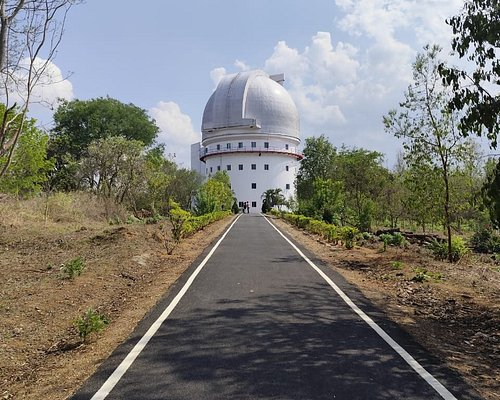
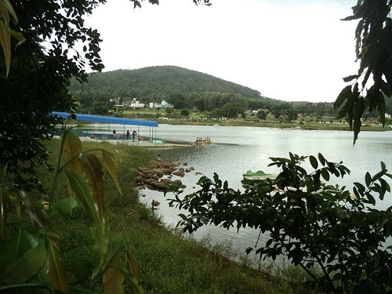
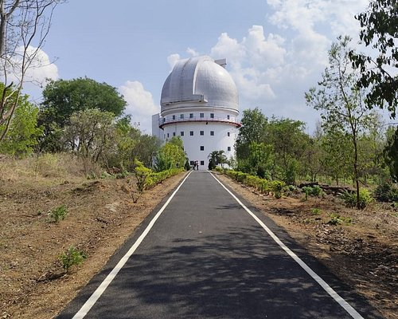
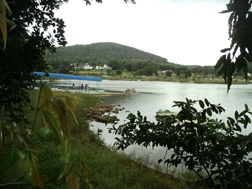

Vellore
Vellore had the previlege of being the seat of the Pallava, Chola, Nayak, Maratha, Arcot Nawabs and Bijapur Sultan Kingdoms. It was described as the best and strongest fortress in the Carnatic War in the 17th Century. It was witnessed the massacre of European soldier during the mutiny of 1806. Vellore district lies between 12° 15’ to 13° 15’ North latitudes and 78° 20’ to 79° 50’ East longitudes in Tamilnadu State. The geographical area of this district is 5920.18 sq. k.m. The total population as per 2011 Census is 39,36,331. Vellore is the Head-Quarters of Vellore District which is well connected by Rail and bus routes to major towns of the neighbouring states like Andhra Pradesh, Karnataka and Kerala. The history of the District assumes a great significance and relevance, as we unfold the glorious past. The Monuments found in the district give a vivid picture of the town through the ages. In the 18th Century Vellore District was the scene of some of the decisive battles fought in Ambur 1749 A.D., Arcot 1751 A.D. and Vandavasi 1768 A.D. as a result of the long – drawn struggle between the English and the French for Supremacy. One of the monuments of Vellore is the Fort. A very close examination of the stone inscriptions suggests that the Fort in all probability might have been built during the rule of Chinna Bommi Nayak (1526 to 1595 A.D.). The Fort is one of the most perfect speciments of Military architecture in South India. The Jalakandeswarar Temple inside the Fort is a very fine example of Vijayanagar architecture. The Kalyanamantap on the left of the entrance, with intricate carvings and delicacy of execution bears testimony to the engineering marvel and advanced state of sculpture of the times. Another landmark that has put Vellore on the Centre stage of Medical world is the Christian Medical College & Hospital.

 


